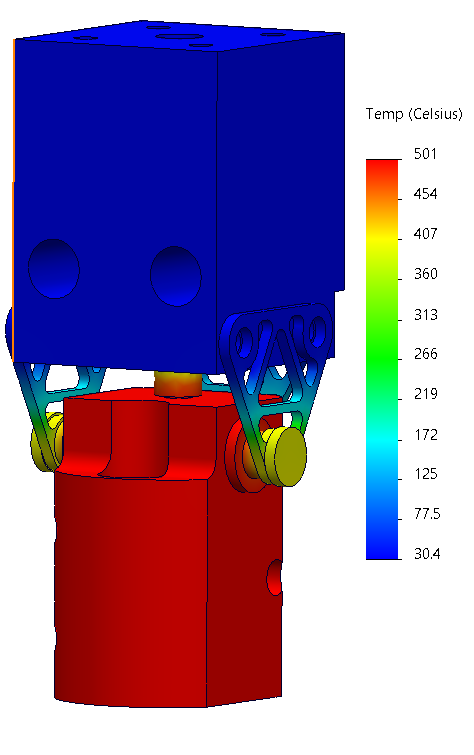
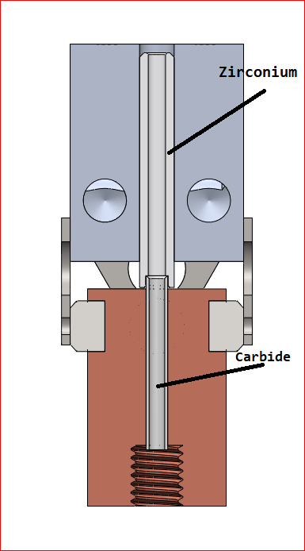

syringe pump

I designed and built this syringe pump after several failed grueling 12hr blood damage
experiments. The commercial syringe pumps that we had would fail for various reasons, their leadscrew
nuts wearing excessively, overheating etc., and additionally to quicken the blood hemolysis and thus
reduce the time of our experiments we wished to pump the fluid at much faster flow rates.
It took about a week to design the pump, my exact design constraints being unknown and to reduce overall
design time I “overbuilt” the machine. Instead of a leadscrew I opted for a ballscrew, for better
positional control & wear resistance. It should be noted that probably a leadscrew makes more sense here
but when a ballscrew of decent quality can be bought for ~$50 it’s hard to say no. The control scheme
was written in Arduino, and a large stepper motor drives the carriage up and down. I machined all the
parts myself using semi-manual prototrac mills.
If I were to redesign this machine I would reverse the orientation of the ballscrew, so that it is driven from the bottom side of the pump. This would ensure that the ballscrew is in tension on the downstroke of the syringes, which is the direction in which the highest force is exerted. Doing this I would be able to spec a much smaller ballscrew because buckling would no longer be the failure mode. The force from the upstroke will always be limited by Syringe Area[in^2]*14.7[psi]. If this was a production machine the complex multi-part aluminum structure would be replaced with a specialized aluminum extrusion.
v9 hotend
 
This is a personal project that I have been working on for a few months now. It is a
high-performance hotend for high-temp/ DIY industrial 3D printers. The main feature is a fully
wear-resistant filament path, which is achieved with a silver-brazed carbide tube in the copper block
“hotzone” and a zirconium ceramic tube in the aluminum “coldzone”. Another feature is a non-structural
heatbreak of a novel-ish design, the laser-cut titanium triangles. Titanium was chosen for its low heat
transfer coefficient of ~[7W/mK] and its strength. The geometry of the triangles reduces the overall
heat transfer from hotzone to coldzone by decreasing the effective cross-sectional area. The zirconium
tube was chosen for its extremely high hardness and its heat transfer coefficient of ~[3W/mK]. The total
heat transfer of the device is [5W] with a heat delta of 465[degC], according to SOLIDWORKS simulations.
An issue that has arisen is sealing the joint between the carbide and zirconium tubes. Due to the
extreme hardness of each material, there is no chance of deforming either material to form a seal. So
the only option ive thought of (besides using a copper washer between the two) is lapping their faces
until
they match each other. How well this will work is still to be seen.
The grade of copper chosen for the hotblock is C18150, which is a high-strength/hardness copper. During
the silver brazing operation, the copper loses its hardness but fortunately it can be restored easily
because it is a precipitation hardening grade.
see www.v9hotend.com for a current update on this project!
magnetic bearing

This is a “slice” bearing/motor that I have been the main designer of. This magnetic
bearing topology is especially suited for centrifugal pumping applications as it is passively stable
axially ‘Z’ and in tilting about ‘X & Y’. Its radial position is the only axis that needs real-time
control.
I have been working on this project on and off for a few years under different titles at RIT. The
initial
design was quickly put together to meet some grant deadlines and provide a baseline for improvements and
optimizations.
The stator shown above is made from cast iron because it has a reasonably high permeability. The profile was wire EDM'd at RIT.


Above are graphs of the magnetic performance of the bearing, before and after an iteration of
one-dimensional geometric optimizations. The simulation was run in COMSOL ACDC of a fully parameterized
geometric model. Unfortunately I did not have access the optimization toolbox for COMSOL, so I had to
write my own MATLAB -> COMSOL interface in order to to change the parameters of the COMSOL model &
collect the data. Doing more upfront work to reduce future workload.
There were some minor gains: axial stiffness increased by ~[2 N/mm], and radial “unstiffness” decreased
by ~[4 N/mm].


here you can see the geometric parameters that were varied to improve the performance. In the future we plan to perform a real optimization, probably some form of powells method.

Now the stator arms are made of laminated steel, which has a much higher permeability than cast iron.
The laminations were laser-cut and then glued together with a probably non-optimal glue. The laminations
should improve performance a lot as they only allow eddy currents to form in plane with the laminations.
The arms are clamped into a cast iron base. Ideally the whole structure would be laminated steel but
this topology cannot be easily constructed in that way. The clamping feature also lets us easily swap
coils in and out.
There are many next steps for this project. The main one is to LEVITATE,
which I hope to complete before I graduate in May.